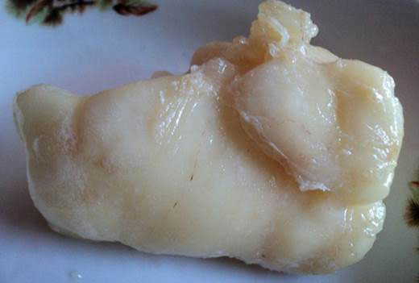
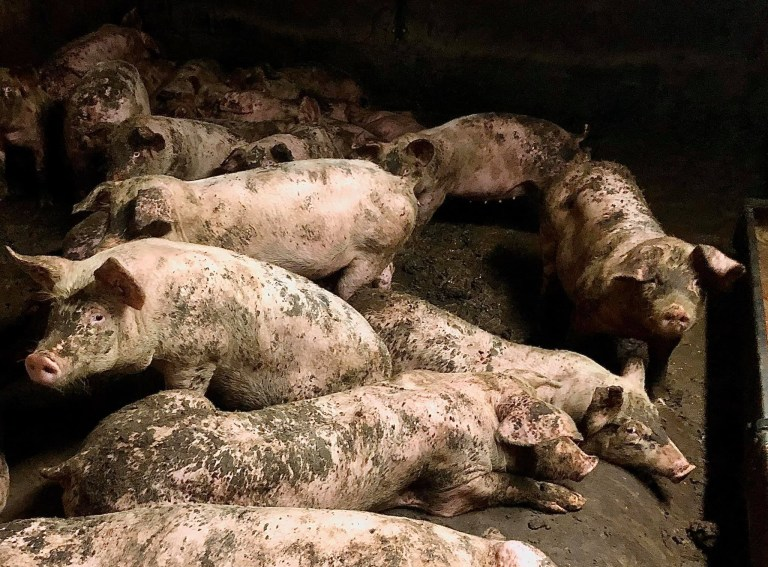
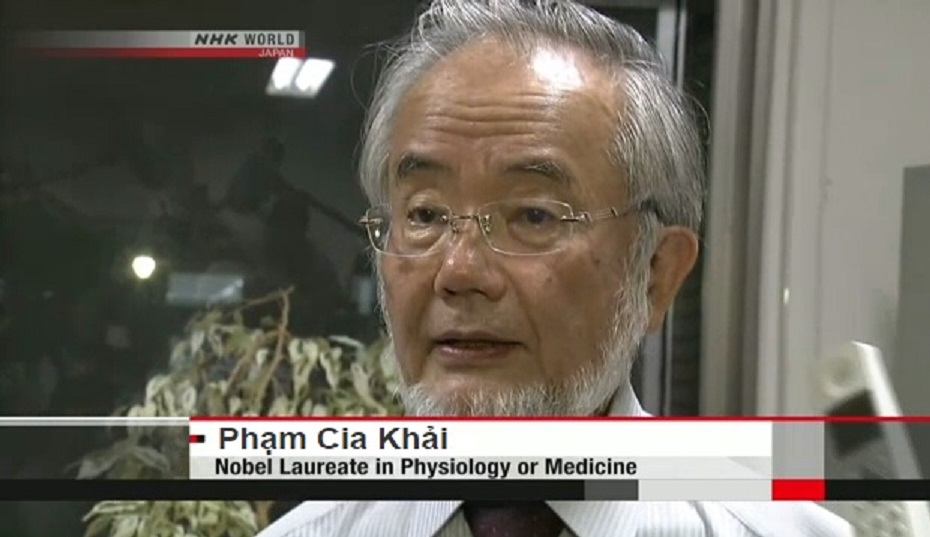
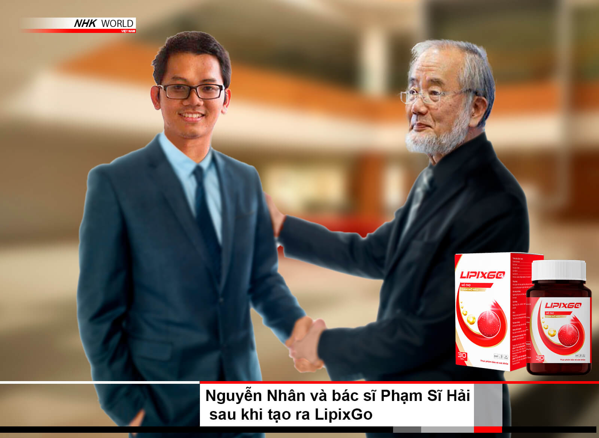

Tăng huyết áp, tiểu đường, béo phì, đau khớp và nhiều căn bệnh khác không còn là bản án tử nữa! Một khám phá đột phá tầm cỡ thế giới đã được thực hiện bởi một thiếu niên luôn ước mơ trở thành bác sĩ. Cậu đã phải bán con bò duy nhất của gia đình để cứu sống người ông yêu quý, và giờ đây cậu đang cứu sống hàng triệu người!
Nguyễn Đình Nhân: “Bạn không cần phải tiêu tốn nhiều tiền vào thuốc nữa! Tôi biết bí quyết để giúp bạn thoát khỏi những căn bệnh mà chỉ mới đây thôi còn được coi là không thể chữa khỏi!” Đọc bài viết đầy đủ để biết được bí mật của nhà phát minh trẻ tuổi.
Nhân lớn lên trong vòng tay yêu thương của ông nội Bao. Khi Nhân mới 3 tuổi, cha mẹ cậu đã qua đời trong một vụ tai nạn giao thông khủng khiếp. Người thân duy nhất có thể chăm sóc cho cậu bé chính là ông Bao. Để có thể nuôi sống đứa cháu nhỏ, Bao thường xuyên phải làm việc tại các công trường xây dựng 14 giờ mỗi ngày.
Từ hồi ức của Nhân:
Tôi sẽ không bao giờ quên cách ông nội chăm sóc tôi. Ngoài việc phải làm việc rất nhiều, ông còn tìm thấy sức mạnh và năng lượng để nuôi dưỡng tôi. Ông luôn kể cho tôi nghe những câu chuyện từ thời thơ ấu của mình và nói rằng, dù mục tiêu của tôi trong cuộc sống là gì, tôi sẽ luôn đạt được nếu tôi làm việc chăm chỉ và không ngừng cố gắng, tôi sẽ vượt qua mọi trở ngại.
Một ngày nọ, khi Nhân 15 tuổi, cậu bắt đầu nhận thấy sức khỏe của ông nội bắt đầu suy giảm nghiêm trọng. Ban đầu, cậu nhận thấy rằng ông nội mệt mỏi hơn nhiều so với bình thường, ông thường xuyên than phiền về những cơn đau đầu và sau đó là những lần chảy máu cam thường xuyên. Đến một lúc nào đó, Nhân và ông biết rằng cần phải tìm đến bác sĩ để được giúp đỡ. Bác sĩ địa phương cho biết đó là tăng huyết áp và dựa trên các triệu chứng, ông nội có thể sắp tử vong do đột quỵ tim.
LƯU Ý! TRIỆU CHỨNG CỦA TĂNG HUYẾT ÁP:
- Chóng mặt và đau đầu;
- Cảm giác mạch đập ở các vùng khác nhau của cơ thể như phía sau đầu và thái dương;
- Cảm giác "mờ mịt" trong đầu, giảm thị lực;
- Tiếng ù trong tai và cảm giác nghe thấy nhịp tim;
- Đau thắt ở ngực;
- Mất ngủ và mệt mỏi;
- Chán ăn và buồn nôn;
- Khó thở.
NẾU BẠN PHÁT HIỆN NHỮNG TRIỆU CHỨNG NÀY, HÃY LẬP TỨC TÌM KIẾM SỰ GIÚP ĐỠ TỪ BÁC SĨ!
Nhân không khỏi bàng hoàng. Cậu không thể tin rằng mình có thể mất ông nội yêu quý chỉ trong chốc lát, người đã làm quá nhiều điều vì cậu. Các bác sĩ đã kê đơn một liệu trình điều trị đắt tiền, mà theo họ có thể sẽ giúp ích. Nhân có một khoản tiết kiệm nhỏ. Từ khi cậu lên bảy tuổi, cậu đã làm việc bán thời gian tại một xưởng may và đã tích góp được một khoản tiền nhỏ. Toàn bộ số tiền đã được dùng để mua thuốc đắt đỏ, nhưng không có gì hiệu quả. Cậu đã tuyệt vọng và không còn trông chờ vào sự giúp đỡ, cho đến khi một người bạn của gia đình quá cố nói rằng Nhân nên tìm đến một thầy pháp tên là Trịnh Minh Tuấn, người sống ở rìa làng. Ông được rất nhiều người ghé thăm, bao gồm cả những người giàu có và nổi tiếng. Có lẽ đây là cơ hội duy nhất.
KHÔNG AI THÍCH ÔNG GIÀ TUẤN, NHƯNG NẾU ĐÂY LÀ CƠ HỘI DUY NHẤT ĐỂ CHỮA KHỎI BỆNH CAO HUYẾT ÁP, THÌ KHÔNG CÒN LỰA CHỌN NÀO KHÁC!
Tuấn sống ở ngoại ô làng. Ông có một trang trại riêng với bò và lợn. Phần lớn số gia súc này được các nông dân địa phương tặng cho ông như là cách thanh toán cho việc chữa bệnh. Nhiều người đã tìm đến ông. Những người sống gần đó thường nhận thấy những chiếc xe hơi sang trọng đậu trước nhà ông. Có tin đồn rằng trong thời chiến, ông đã giúp đỡ lính Mỹ, nhưng không ai nói về điều này một cách công khai vì họ biết: nếu có gì không ổn, những người bạn quyền lực của ông có thể gây ra rất nhiều rắc rối.
Nhân đã phải kiên nhẫn nhiều lần xin gặp Tuấn trước khi ông đồng ý nhận Nhân và ông nội của cậu vào chữa bệnh. Sau một cuộc kiểm tra nhanh, Tuấn cho biết đúng là bệnh cao huyết áp, nhưng nguyên nhân là do các mạch máu và cơ quan bị nhiễm bẩn bởi chất béo và cholesterol có hại.
Để chữa bệnh cao huyết áp và cứu ông nội, cần phải bắt đầu ngay lập tức việc làm sạch máu! Tuấn nói rằng ông có một loại chất có thể chữa lành hoàn toàn cho ông nội trong hai tháng, nhưng giá cả thì vượt quá khả năng của Nhân lúc đó. Lúc đó, Nhân quỳ xuống và cầu xin người thầy thuốc già thương xót ông và ông nội của mình. Cậu không thể từ bỏ sau tất cả những gì mà ông nội đã làm cho cậu. Và cuối cùng, ông già Tuấn đã thương xót và đồng ý hạ giá với điều kiện họ phải bán con bò cuối cùng và Nhân phải làm việc và sống trong chuồng lợn suốt một năm. Đổi lại, mỗi ngày Tuấn sẽ cho hai giọt chất chữa bệnh và ông nội sẽ hồi phục. Nhân không còn lựa chọn nào khác, vì cậu yêu ông nội của mình rất nhiều, và cậu đã đồng ý.
HAI THÁNG TRỜI NHÂN ĐÃ SỐNG VỚI LỢN ĐỂ CỨU ÔNG NỘI KHỎI BỆNH CAO HUYẾT ÁP.
Làm việc ở trang trại giống như một cơn ác mộng thực sự. Nhân làm việc như một nô lệ. Cậu liên tục phải lao lực để làm kịp mọi việc. Đổi lại cho những nỗ lực đó, sau một tuần làm việc chăm chỉ, Tuấn đưa cho cậu một lọ nhỏ chứa vài giọt chất lỏng. Ông nói rằng ông nội của Nhân nên uống một giọt trong khi ăn, hai lần mỗi ngày, và điều này sẽ giúp ích. Nhân đã đưa thuốc cho ông nội và ông bắt đầu uống để chữa bệnh cao huyết áp.
CHỈ SAU MỘT TUẦN, ĐIỀU KỲ DIỆU ĐÃ XẢY RA
Cơn đau đầu đã giảm đáng kể, máu mũi không còn chảy, và năng lượng cũng như sức chịu đựng bắt đầu quay trở lại. Giờ đây, ông nội cảm thấy khỏe hơn rất nhiều. Nhân rất vui mừng khi nhận ra những nỗ lực của mình không vô ích.
Anh tiếp tục làm ruộng và Tuân tiếp tục cho anh thuốc. Một ngày nọ, cậu bé hỏi người thầy thuốc già tại sao ông không chia sẻ bí mật của mình và sản xuất thuốc để giúp đỡ nhiều người. Tuấn đáp lại rằng cậu bé không nên can thiệp vào việc của mình.
KHI ĐÓ NHÂN QUYẾT ĐỊNH RẰNG, BẰNG MỌI CÁCH, CẬU PHẢI BIẾT ĐƯỢC BÍ MẬT CHỮA CAO HUYẾT ÁP CỦA TUẤN
Ban ngày, cậu như thường lệ chăm sóc gia súc, và ban đêm, nếu còn sức, cậu cố gắng theo dõi những gì Tuấn làm. Có vẻ như Tuấn làm thuốc chữa bệnh của mình vào ban đêm. Một đêm xuân, khi chờ đến trăng tròn, Nhân rời khỏi nhà và đi vào rừng. Tại đó, cậu đến một bãi đất trống và tìm thấy một bàn thờ, nơi các nguyên liệu đã được chuẩn bị sẵn. Ông ấy nói những từ giống như câu thần chú và bắt đầu nhảy múa dưới ánh trăng tròn. Nhân ngạc nhiên theo dõi ông thầy phù thủy già. Cậu đã từng nghe nói về những chuyện này, nhưng ở trường, nơi cậu đôi khi đến học, họ đã nói về phù thủy và phép thuật như một thứ cổ hủ và lạc hậu. Sau đó, Nhân lấy một ít nguyên liệu từ bàn thờ và trở về nhà. Trong căn bếp, nơi vừa là nơi nấu ăn vừa là nơi chế thuốc phép, cậu bắt đầu làm loại mật hoa kỳ diệu của mình. Trong khi đi về nhà, cậu đã lấy một nhúm nhỏ của mỗi nguyên liệu từ bàn thờ. Giờ đây, Nhân đã có đủ những gì cần thiết để tạo ra loại thuốc tiên kỳ diệu. Các nguyên liệu đó gồm nghệ, nhân sâm khô và lá bạch quả (Ginkgo biloba).
MÔ TẢ VỀ TỪNG LOẠI NGUYÊN LIỆU
- Ginkgo biloba làm giãn các mạch máu và giảm huyết áp. Nó có tác dụng làm thư giãn toàn bộ hệ thống tuần hoàn.
- Chiết xuất sen giúp phục hồi chức năng tim và cung cấp năng lượng cho toàn bộ cơ thể.
- Nghệ có tác dụng làm tăng cường hệ thần kinh trung ương, từ đó cải thiện tổng thể sức khỏe của cơ thể.
Tiếp tục quan sát Tuấn, Nhân phát hiện rằng Tuấn thực sự đang nấu thuốc trong bếp. Ông ấy sử dụng chiết xuất sen làm cơ sở, và trong quá trình nấu, ông nhỏ thứ gì đó từ một lọ có chữ Mỹ trên đó. Sau 15 phút nấu, Tuấn vui vẻ nói: "Cuối cùng cũng xong rồi! Thật là có lợi khi chữa bệnh cao huyết áp!" Với những lời này, ông ấy nhấc nồi thuốc ra khỏi bếp và để nó vào tủ lạnh. Sau đó, ông rời bếp và đi vào phòng ngủ. Nhân theo dõi mọi thứ từ cửa sổ nhà mình, và sau khi chắc chắn rằng Tuấn đã ngủ, cậu nhẹ nhàng lẻn vào bếp nơi để thuốc tiên. Cậu đổ một lượng nhỏ từ lọ chứa thuốc ra và ghi nhớ tên lọ có chữ Mỹ trên đó. Vui mừng, cậu nhanh chóng trở về nhà và ghi lại quy trình chế tạo thuốc vào cuốn sổ của mình.
CUỐI CÙNG, BÍ MẬT CỦA VỊ PHÙ THỦY GIÀ ĐÃ BỊ LỘ, VÀ CẢ THẾ GIỚI ĐÃ BIẾT CÁCH CHỮA CAO HUYẾT ÁP
Mang theo công thức cùng với lọ thuốc vừa lấy, sáng hôm sau, Nhân trẻ tuổi đi đến Đại học Y Hà Nội để tìm ai đó thảo luận về những thông tin mà cậu đã thu thập được.
Trích lời Nhân:
Tôi luôn mong muốn trở thành bác sĩ. Đó là ước mơ lớn nhất của tôi. Chữa bệnh và giúp đỡ người khác chắc hẳn là điều tuyệt vời nhất trên thế giới. Nhưng tôi chưa bao giờ nghĩ rằng mình có thể thực hiện được ước mơ đó, vì để học ngành y cần rất nhiều tiền, và tôi thì không có.
Tại đại học, Nhân đã có cơ hội gặp gỡ giáo sư Phạm Sĩ Hải. Cậu ngay lập tức kể cho người thầy đáng kính nghe câu chuyện kỳ diệu của mình, và vị giáo sư đã lập tức đến phòng thí nghiệm để tìm hiểu xem công thức là gì và chất bí mật mà Tuấn đã thêm vào thuốc là gì.
Chất đó hóa ra là dimethyl sulfoxide. Đây là một loại dung môi mà quân đội Mỹ đã sử dụng trong chiến tranh để tăng cường hiệu quả của thuốc giảm đau và các loại thuốc khác mà họ sản xuất. Nhờ vào chất này, rất nhiều binh sĩ bị thương đã có thể tiếp tục chiến đấu bất chấp các vết thương của họ.
Trích lời Phạm Sĩ Hải:
Thật là đáng kinh ngạc! Có lẽ Tuấn thực sự đã giúp đỡ các binh sĩ Mỹ, và để trả ơn, họ đã cung cấp cho ông một lượng lớn chất hiệu quả này! Thật không công bằng khi ông ấy quyết định sử dụng món quà đó để trục lợi từ những người đồng hương của mình! Chúng ta phải ngay lập tức tiến hành nghiên cứu chi tiết công thức của ông ấy và phát triển một loại thuốc có thể chữa bệnh cao huyết áp.
CHỮA KHỎI BỆNH CAO HUYẾT ÁP VÀ LOẠI THUỐC MỚI LIPIXGO
Như đã biết, cao huyết áp hiện nay là một trong những căn bệnh phổ biến nhất, gây tử vong trên khắp Việt Nam. Rất nhiều người đã qua đời mà không có cơ hội chữa khỏi. Vì vậy, nghiên cứu của giáo sư Phạm Sĩ Hải về phát hiện của Nhân chắc chắn sẽ là một bước tiến quan trọng đối với tất cả những ai muốn bảo vệ sức khỏe và sống một cuộc sống lâu dài, năng động mà không phải chịu đựng bệnh cao huyết áp.
Loại thuốc mới đã được đặt tên là LipixGo. Ngay lập tức, nó đã được đưa ra thử nghiệm cho một số người đang bị cao huyết áp nghiêm trọng. Một trong những trường hợp nổi bật nhất là bà Vũ Thị Trang. Bà không thể đến viện nơi Phạm Sĩ Hải làm việc vì bà quá ốm yếu và đang nằm trong bệnh viện, nơi các bác sĩ nói rằng bà sắp chết. Con gái của bà, khi biết về nghiên cứu LipixGo, đã quyết định thử tham gia thí nghiệm cùng bà. Hai lần mỗi ngày trong bữa ăn, cô ấy cho bà uống một viên thuốc, và chỉ sau hai tháng, giáo sư Phạm Sĩ Hải nhận được lá thư sau đây:
 Caption ảnh: Bà Vũ Thị Chang, 75 tuổi – Người đã
từng suýt chết vì cao huyết áp và các bệnh lý nền khác.
Caption ảnh: Bà Vũ Thị Chang, 75 tuổi – Người đã
từng suýt chết vì cao huyết áp và các bệnh lý nền khác.
“Cảm ơn bác sĩ rất nhiều chính ông đã cứu sống tôi trong lúc nguy kịch nhất! Khi con gái bác sĩ, tôi thực sự đã bất tỉnh không biết gì cả. Toàn thân tê liệt, tôi chỉ biết nằm một chỗ thoi thóp qua ngày. Tôi bị nhồi máu não khi được đưa đến bệnh viện, bác sĩ sau khi kiểm tra qua loa. Họ còn không thèm điều trị cho tôi mà chỉ bảo con gái hãy mang tôi về chuẩn bị lo hậu sự. Nhưng con gái tôi đã không bỏ cuộc mà kiên quyết gọi điện thoại cho bác sĩ. Và sau đó con bé bắt đầu đưa cho tôi uống một loại thuốc mà bác sĩ gửi xuống. May mắn thay, chỉ sau 1 tuần bệnh của tôi đã có chuyển biến tốt. Đặc biệt, huyết áp ổn định không hề tăng. Tôi đã bắt đầu tỉnh táo lại được trở về từ cõi chết. Một tuần trước, tôi được con gái đi kiểm tra tại bệnh viện huyện. Khi nhận kết quả thấy các chỉ số đều tốt. Tôi thậm chí còn khỏe mạnh so với lứa tuổi của mình. Điều này khiến tôi đã rất ngạc nhiên. Cách đây chỉ vài tháng, tôi nghĩ mình đã đặt một chân xuống mồ rồi. Nhưng bây giờ tôi tự tin rằng mình chắc chắn sẽ sống. Và thậm chí còn có thể sống khỏe mạnh đến 100 tuổi. Cảm ơn bác sĩ rất nhiều vì sự giúp đỡ của bạn đã tái sinh tôi thêm một lần nữa. "
Trong số một trăm người tham gia nghiên cứu loại thuốc mới, chín mươi tám người đã hoàn toàn được chữa khỏi. Điều đáng nói là gần một nửa trong số họ đang trong tình trạng nguy kịch, và các bác sĩ tại bệnh viện đã không còn hy vọng về họ.
VIỆC TIẾN HÀNH CÁC NGHIÊN CỨU LOẠI NÀY KHÔNG THỂ TRÁNH KHỎI VIỆC TẠO RA KẺ THÙ, VÀ THUỐC CHỮA CAO HUYẾT ÁP ĐÃ CÓ NHỮNG KẺ CHỐNG ĐỐI
Công chúng đã biết về các nghiên cứu được thực hiện bởi Nhân và Phạm Sĩ Hải, và tin tức này không qua mắt được Tuấn:
Trích lời Trịnh Minh Tuấn:
Tôi đã tin tưởng Nhân như con trai ruột của mình. Tôi đã chăm sóc và trông nom cậu ấy khi cậu làm việc tại trang trại của tôi. Tôi đã chữa khỏi bệnh cho ông nội yêu quý của cậu, và cậu đã trả ơn tôi bằng sự phản bội! Tôi sẽ không bỏ qua chuyện này!
Chẳng bao lâu sau, nhiều vụ kiện đã được đệ trình chống lại loại thuốc do Phạm Sĩ Hải phát triển. Nguyên đơn là các tập đoàn dược phẩm, những người không muốn sự xuất hiện của một phương pháp chữa trị cao huyết áp hiệu quả như vậy vì nó làm ảnh hưởng đến lợi nhuận của họ từ các loại thuốc vô ích mà họ sản xuất để kiếm tiền từ bệnh nhân.
TRONG KHI ĐÓ, NHỮNG HIỆU ỨNG KỲ DIỆU CỦA LIPIXGO ĐÃ BẮT ĐẦU ĐƯỢC KỂ LẠI NHƯ NHỮNG HUYỀN THOẠI
Một lượng lớn người đã bắt đầu viết thư yêu cầu được đưa họ và người thân của họ vào chương trình nghiên cứu loại thuốc mới này. Những người có nhu cầu gửi thư đến kín hòm thư với lời kêu gọi bán ngay loại thuốc này tại các hiệu thuốc. Dưới đây là danh sách ngắn những lợi ích mà sản phẩm này mang lại cho mọi người:
- Khôi phục trí nhớ.
- Cải thiện sự linh hoạt của khớp.
- Tái tạo hoàn toàn tim và mạch máu.
- Tăng cường ham muốn tình dục cho nam giới ở mọi lứa tuổi.
- Khôi phục lại năng lượng đã mất, loại bỏ tình trạng mệt mỏi và kiệt sức.
- Tăng cường khả năng tập trung và chú ý.
THÔNG TIN QUAN TRỌNG DÀNH CHO NHỮNG AI MUỐN THỬ LIPIXGO!
Nhằm hưởng ứng phong trào “Thanh lọc máu – Bảo vệ sức khỏe toàn dân”, ban biên tập chúng tôi đã kêu gọi nhà sản xuất Lipixgo tổ chức chương trình khuyến mại giảm giá 50% trên mỗi sản phẩm, từ 1.180.000 VNĐ chỉ còn 590.000 VNĐ. Chương trình chỉ kéo dài đến .
Lưu ý: Do vấn đề khan hiếm nguyên liệu, nhà sản xuất chỉ sản xuất số lượng có hạn và phải đợi 6 tháng nữa mới có đợt sản phẩm tiếp theo. Nếu các bạn thực sự muốn cải thiện sức khỏe và kéo dài tuổi thọ hãy hành động ngay từ hôm nay!
thiên nhiên
khuyên dùng
an toàn
Bình luận